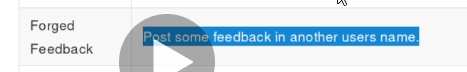

we would be abusing this feature

now right lcick inspect element
as you can see email is in asterix bt at times its only in front end can be seen in inspect element

thus remove this hidden tag

and boom u have the user number
aise hi while entering password u could change fiedtype to text and boom
noow changing this 21 to lets say 1 to submit throguh his account

http://localhost:3000/#/administration when go to this site blocks us bt we get to know there for a sec like